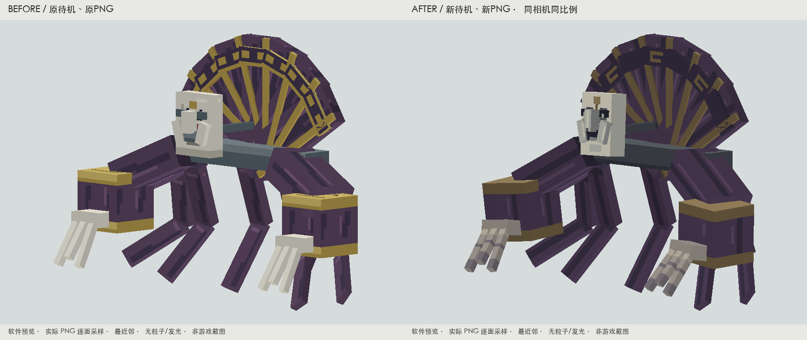
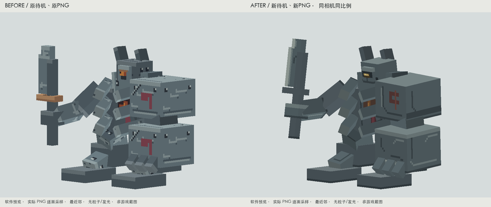
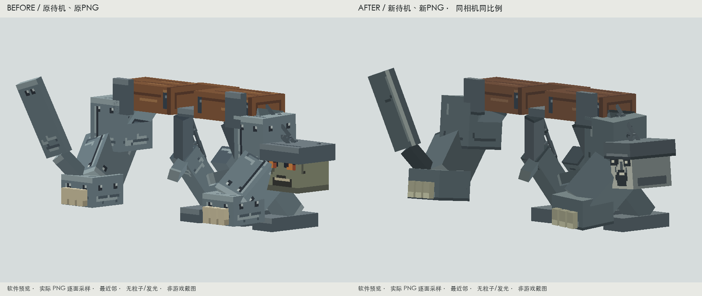

帷幕面灵
dynasty:eunuch_mastermind扇骨、金边和袖口与面具争抢注意力，原面部有笑脸感。
收敛扇沿与袖口；深眼窝、克制的目光与下垂面纹突出面具。布幕沿折叠方向分层，长指区分根部、指节与末端。
面具独立观察，长袖和指体轻微蓄势；近战从原有接触开始回弹，再收拢。
实际参考：Goety Necromancer / Wraith 原始贴图的暗布、骨色与小面积重点组织。同相机、同比例前后对照 · 软件预览

实机画面 · 普通光照、无额外粒子、玩家比例
实机移动、预备、接触和恢复
完整代表动作 · 软件逐面贴图
原色近景、正侧背与灰度
原始PNG与UV检查
玩家、石砖木材与观察距离
验证边界：仍沿用原有面具、鼻和颊几何。cast 未由当前通用控制器绑定具体法术，本轮未声称法术同步全部完成。
兵煞残甲
dynasty:rebel_general甲片上重复的亮边、铆点和残旗盖过了残盔；刀面缺少连续刃口。
残盔改为暗眼槽中的小面积琥珀观察口；旧铁保留干净大面，只在搭接与破甲手受力面集中接缝和磨损。原刃口连续区分，胸内兵煞降为辅助。
残盔朝向与持械预备姿态加强；第12 tick前蓄力，接触后巨臂配重回稳，完整动作仍24 tick。
实际参考：Ignis 的兵器/护甲主次及原始PNG色区；Ender Golem 作者展示中的头与重臂分工。同相机、同比例前后对照 · 软件预览

实机画面 · 普通光照、无额外粒子、玩家比例
实机移动、预备、接触和恢复
完整代表动作 · 软件逐面贴图
原色近景、正侧背与灰度
原始PNG与UV检查
玩家、石砖木材与观察距离
验证边界：自然创建实体主手为空时展示原有几何长兵刃；非空主手仍走既有物品挂点。本轮未改变装备逻辑，非空装备组合未追加逐项测试。
刑枷悬首
dynasty:xianzhen_duantoujiang悬首与钢甲明度接近，红橙眼像通用装饰；吼击时旧滚转让脸转离玩家。
苍灰面部、深眼窝和口腔分区突出悬首；木枷、暗链、铁甲分材质。普通肩甲去掉均匀亮点，刃口与手部接触磨损成为次级威胁。
头与链作为整体绕原锚点摆动；吼击减少侧翻，24 tick仍朝前，巨臂随后恢复。旋转与抛掷保留既有技能时间。
实际参考：Goety Necromancer 骨色与暗衣层次；保留本作木枷长轴木纹，未复制外部资产。同相机、同比例前后对照 · 软件预览

实机画面 · 普通光照、无额外粒子、玩家比例
front · 实机45 · 实机side · 实机back · 实机 实机移动、预备、接触和恢复
walk · 10 tickroar-tell · 18 tickroar-contact · 24 tickroar-recovery · 44 tickspin-contact · 26 tickthrow-contact · 20 tick 完整代表动作 · 软件逐面贴图
原色近景、正侧背与灰度
front-unlitside-unlitback-unlitthree-quarter-unlitfront-graythree-quarter-gray 原始PNG与UV检查
256×256原始PNG4倍最近邻UV叠加编号方向检查侧面方向检查 玩家、石砖木材与观察距离
验证边界：悬首没有独立下颚，本轮口部是表面设计，不声称具备张嘴结构；抛掷技能沿用原血池机制，未新增飞头。